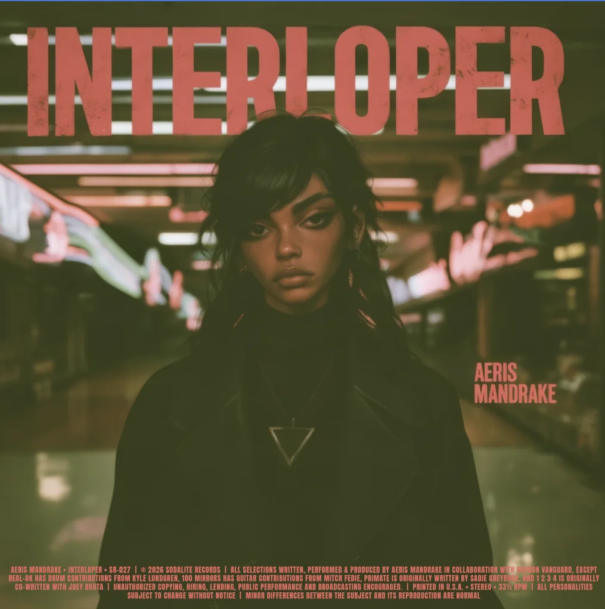
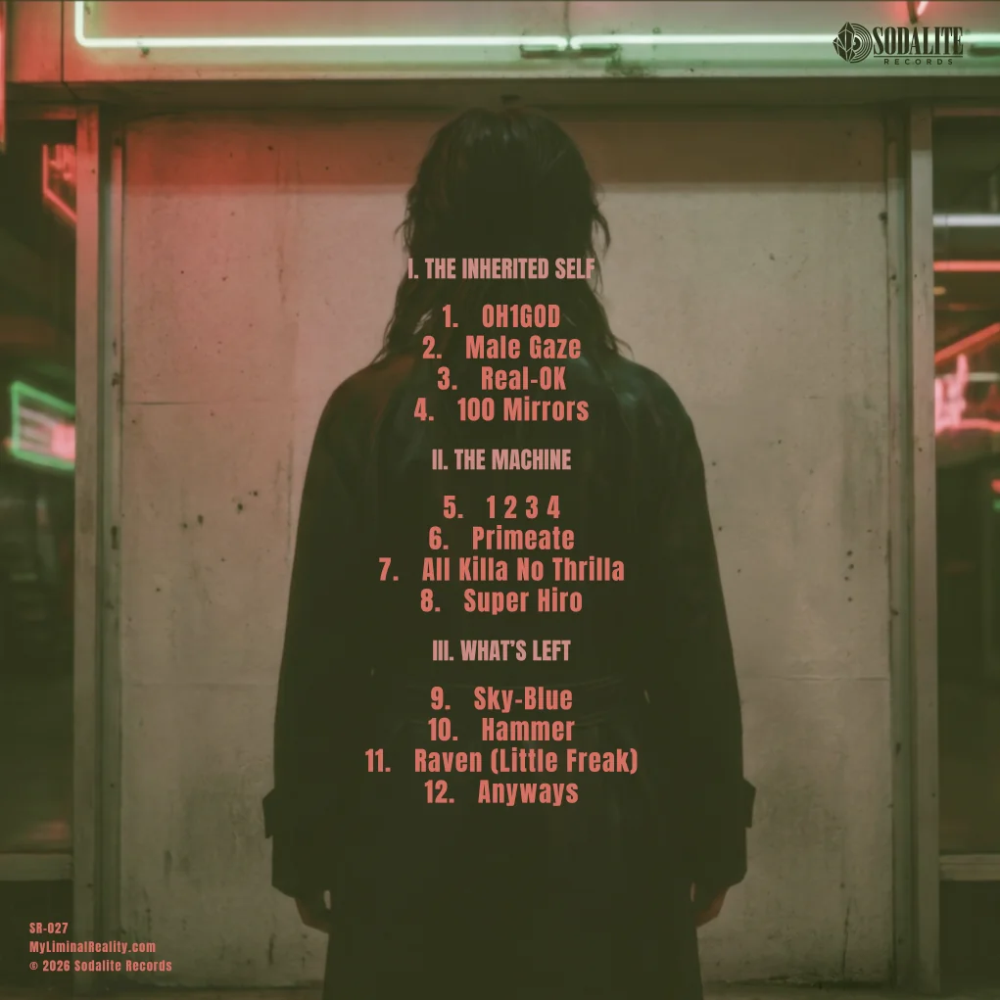

The Inherited Self
All three televisions are tuned to the same channel. You look different on each one.
- OH1GOD ↗
- Male Gaze
- Real-OK
- 100 Mirrors

The Machine
The fountain is still running.
Take the escalator →- 1 2 3 4
- Primeate
- All Killa No Thrilla
- Super Hiro
What’s Left
Through the wall, you can still hear the fountain. The directory by the exit has one store left on it.
Read the visitor record ↗- Sky-Blue
- Hammer
- Raven (Little Freak)
- Anyways
Album artwork

